library(survival)
library(asaur)
library(tidyverse)
library(broom)
library(ggdist)Recommended Reading
- Applied Survival Analysis Using R by Dirk F. Moore
- Chapters 9 to 15 in Applied Longitudinal Data Analysis: Modeling Change and Event Occurrence by Judith Singer and John Willett
- A package for survival analysis in R by Terry Therneau
Prerequisites
Overview
Survival analysis is the study of survival times and of the factors that influence them.
Censoring
There are X types of censoring:
- Left censoring
- Right censoring
tribble(
~id, ~time, ~event, ~censored,
"p1", 0, "0", FALSE,
"p1", 7, "1", TRUE,
"p2", 0, "0", FALSE,
"p2", 6, "2", FALSE
) |>
ggplot(aes(x = time, y = id)) +
geom_line() +
geom_point(aes(shape = event, fill = censored), size = 5) +
scale_shape_manual(values = c(16, 21, 4)) +
scale_fill_manual(values = c("black", "white")) +
guides(fill = "none")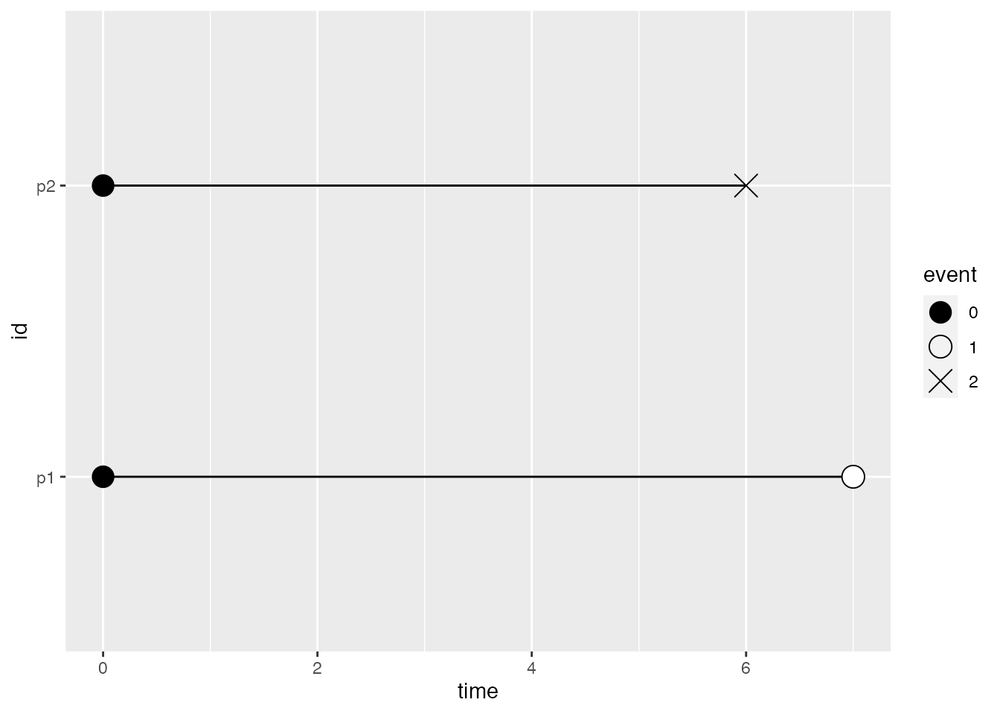
Censoring mechanisms can be classified into three types:
- Type I: censoring times are pre-specified.
- Type II: censoring occurs when a prespecified fraction of observations have failed.
- Random: censoring occurs randomly.
Hazard and Survival functions
Survival analysis methods depend on the survival distribution, and two key ways of specifying it are the survival function and the hazard function.
- Survival function: the probability of surviving up to a point t.
- Hazard function: the instantaneous failure rate.
Survival distributions can also be represented with:
- Cumulative risk function: the probability of surviving on or before a point t.
- Cumulative hazard function: the area under the hazard function up to time t.
Survival functions are typically estimated with nonparametric methods:
- Kaplan-Meier estimator
- Nelson-Altschuler estimator
RCT: Veterans’ Administration Lung Cancer study
Veterans’ Administration Lung Cancer study is a standard randomized clinical trial investigating the effect of a standard or test chemotherapy on time to death in 137 males with advanced inoperable lung cancer. The data for this trial comes from kalbfleischprentice_StatisticalAnalysisFailure_2002 and is included in the survival package as veteran. The following variables were recorded at intake:
trt: Chemotherapy treatment type (1 = standard, 2 = test)celltype: Histological tumour type (1 = squamous, 2 = smallcell, 3 = adeno, 4 = large)karno: General medical status measured with the Karnofsky performance score (10-30 = completely hospitalized, 40-60 = partial confinement, 70-90 = able to care for self)diagtime: Time in months from diagnosis to randomizationage: Age in yearsprior: Prior therapy (0 = no, 10 = yes)
Survival was recorded as:
time: Survival time in daysstatus: Censoring status (0 = yes, 1 = no)
We can get a glimpse of the data with dplyr::glimpse():
glimpse(veteran)#> Rows: 137
#> Columns: 8
#> $ trt <dbl> 1, 1, 1, 1, 1, 1, 1, 1, 1, 1, 1, 1, 1, 1, 1, 1, 1, 1, 1, 1, 1…
#> $ celltype <fct> squamous, squamous, squamous, squamous, squamous, squamous, s…
#> $ time <dbl> 72, 411, 228, 126, 118, 10, 82, 110, 314, 100, 42, 8, 144, 25…
#> $ status <dbl> 1, 1, 1, 1, 1, 1, 1, 1, 1, 0, 1, 1, 1, 0, 1, 1, 1, 1, 1, 1, 0…
#> $ karno <dbl> 60, 70, 60, 60, 70, 20, 40, 80, 50, 70, 60, 40, 30, 80, 70, 6…
#> $ diagtime <dbl> 7, 5, 3, 9, 11, 5, 10, 29, 18, 6, 4, 58, 4, 9, 11, 3, 9, 2, 4…
#> $ age <dbl> 69, 64, 38, 63, 65, 49, 69, 68, 43, 70, 81, 63, 63, 52, 48, 6…
#> $ prior <dbl> 0, 10, 0, 10, 10, 0, 10, 0, 0, 0, 0, 10, 0, 10, 10, 0, 0, 0, …Exploratory data analysis
Rather than working with the raw data, we begin by estimating the survival function of the veteran data using the Kaplan-Meier estimator. We accomplish this with survival::survfit(), which estimates a survival curve for censored data using R’s formula syntax. The response variable is a Surv object created with survival::Surv(), which tracks survival time and censoring; the predictor is 1, which indicates this is an intercept-only model.
To use alternative estimators for the survival function, specify the optional stype and ctype arguments in survival::survfit(). For the Nelson-Aalen estimator (aka Nelson-Altschuler or Fleming-Harrington) use survfit(..., stype = 2, ctype = 1); for the “fh2” estimator use survfit(..., stype = 2, ctype = 2). The default Kaplan-Meier estimator is equivalent to survfit(..., stype = 1, ctype = 1).
veterans_km_fit <- survfit(Surv(time, status) ~ 1, data = veteran)Although we are interested in the survival function of the veteran data, the actual reason we began this way is because it provides a convenient method for transforming the raw data into a format better suited for some initial exploratory data analysis. We first add a time 0 to the survfit object with survival::survfit0() (otherwise the data will start at the first observation time) then get the transformed data with broom::tidy():
veterans_km_fit_tidy <- veterans_km_fit |>
survfit0() |>
tidy()
glimpse(veterans_km_fit_tidy)#> Rows: 102
#> Columns: 8
#> $ time <dbl> 0, 1, 2, 3, 4, 7, 8, 10, 11, 12, 13, 15, 16, 18, 19, 20, 21,…
#> $ n.risk <dbl> 137, 137, 135, 134, 133, 132, 129, 125, 123, 122, 120, 118, …
#> $ n.event <dbl> 0, 2, 1, 1, 1, 3, 4, 2, 1, 2, 2, 2, 1, 3, 2, 2, 2, 1, 2, 3, …
#> $ n.censor <dbl> 0, 0, 0, 0, 0, 0, 0, 0, 0, 0, 0, 0, 0, 0, 0, 0, 0, 0, 0, 1, …
#> $ estimate <dbl> 1.0000000, 0.9854015, 0.9781022, 0.9708029, 0.9635036, 0.941…
#> $ std.error <dbl> 0.00000000, 0.01039891, 0.01278345, 0.01481644, 0.01662791, …
#> $ conf.high <dbl> 1.0000000, 1.0000000, 1.0000000, 0.9994081, 0.9954216, 0.981…
#> $ conf.low <dbl> 1.0000000, 0.9655208, 0.9539002, 0.9430165, 0.9326091, 0.903…This summary of the veteran data, called a life table [see Section 10.1 in singerwillett_AppliedLongitudinalData_2003], tracks the event histories (the “lives”) of the sample from the beginning of time (when no one has experienced the target event) to the end of data collection (when everyone has either experienced the target event or been censored). For now we are only interested in first four variables, which we can use to explore event occurrence over time:
time: the time point, tn.risk: the number of males at risk at time tn.event: the number of events that occurred at time tn.censor: the number of males who exited the risk set, without an event, at time t
There are two ways to visualize this data: First, we can explore how the risk set changes over time, and second, we can explore what events occurred at each time t. Additionally, these visualizations can either be stepped or not; we’ll visualize both versions for completeness sake.
Event history
We’ll start by exploring how the risk set changes over time. This requires further transformation of the data to (1) get the appropriate counts at each time point, (2) pivot to a tidier format, and (3) create steps for each time point.
veterans_risk_set <- veterans_km_fit_tidy |>
# (1) Get the appropriate counts at each time point.
mutate(
alive = n.risk - n.event - n.censor,
dead = cumsum(n.event),
censored = cumsum(n.censor)
) |>
select(time, alive, dead, censored) |>
# (2) Pivot to a tidier format.
pivot_longer(-time, names_to = "status", values_to = "n") |>
mutate(status = factor(status, levels = c("censored", "dead", "alive")))
glimpse(veterans_risk_set)#> Rows: 306
#> Columns: 3
#> $ time <dbl> 0, 0, 0, 1, 1, 1, 2, 2, 2, 3, 3, 3, 4, 4, 4, 7, 7, 7, 8, 8, 8, …
#> $ status <fct> alive, dead, censored, alive, dead, censored, alive, dead, cens…
#> $ n <dbl> 137, 0, 0, 135, 2, 0, 134, 3, 0, 133, 4, 0, 132, 5, 0, 129, 8, …# (3) Create steps for each time point.
veterans_risk_set_stepped <- veterans_km_fit_tidy |>
mutate(
alive = n.risk - n.event - n.censor,
died = alive + cumsum(n.event),
censored = died + cumsum(n.censor)
) |>
select(time, alive, died, censored) |>
pivot_longer(-time, names_to = "status", values_to = "n") |>
mutate(status = factor(status, levels = c("censored", "died", "alive")))
# Based on: https://stackoverflow.com/a/41962072/16844576
veterans_risk_set_stepped <- bind_rows(
raw = veterans_risk_set_stepped,
step = mutate(veterans_risk_set_stepped, n = lag(n, nlevels(status))),
.id = "source"
) |>
arrange(time, desc(source))
glimpse(veterans_risk_set_stepped)#> Rows: 612
#> Columns: 4
#> $ source <chr> "step", "step", "step", "raw", "raw", "raw", "step", "step", "s…
#> $ time <dbl> 0, 0, 0, 0, 0, 0, 1, 1, 1, 1, 1, 1, 2, 2, 2, 2, 2, 2, 3, 3, 3, …
#> $ status <fct> alive, died, censored, alive, died, censored, alive, died, cens…
#> $ n <dbl> NA, NA, NA, 137, 137, 137, 137, 137, 137, 135, 137, 137, 135, 1…Figure 1 depicts how the risk set of the veteran data changed over time. This is a standard event history for survival data…
The advantage of the stepped version is that it makes it easier to see when events occurred. It also matches the survival curve plots we’ll create later, which are all visualized with step functions. The disadvantage is that it involves more code. If this was going to be reported to others I would use the stepped version, but for personal exploration I would use the not stepped version.
ggplot(veterans_risk_set, aes(x = time, y = n, fill = status)) +
geom_area() +
scale_fill_manual(values = c("#1b6ca8", "#cd201f", "#3aaf85"))
ggplot(veterans_risk_set_stepped, aes(x = time, y = n, fill = status)) +
geom_ribbon(aes(ymin = 0, ymax = n)) +
scale_fill_manual(values = c("#1b6ca8", "#cd201f", "#3aaf85"))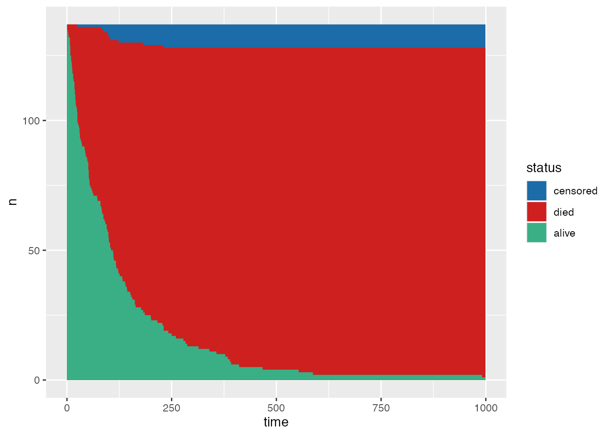
veteran data, depicting how the risk set changes over time.As a compliment to Figure 1, we can also explore what events occurred at each time t. Figure 2 depicts the event history of the veteran data over time—this is essentially a more information rich version of risk tables that are sometimes appended to survival curve plots.
The code for this is nearly identical to the code for the previous plots—the main difference is how we calculate the counts at each time point—so I’ve folded it here.
Code
veterans_events <- veterans_km_fit_tidy |>
# (1) Get the appropriate counts at each time point. Now we use the raw counts
# rather than cumulative sums.
mutate(
none = n.risk - n.event - n.censor,
died = n.event,
censored = n.censor
) |>
select(time, none, died, censored) |>
# (2) Pivot to a tidier format.
pivot_longer(-time, names_to = "event", values_to = "n") |>
mutate(event = factor(event, levels = c("censored", "died", "none")))
# (3) Create steps for each time point.
veterans_events_stepped <- veterans_km_fit_tidy |>
mutate(
none = n.risk - n.event - n.censor,
died = none + n.event,
censored = died + n.censor
) |>
select(time, none, died, censored) |>
pivot_longer(-time, names_to = "event", values_to = "n") |>
mutate(event = factor(event, levels = c("censored", "died", "none")))
veterans_events_stepped <- bind_rows(
raw = veterans_events_stepped,
step = mutate(veterans_events_stepped, n = lag(n, nlevels(event))),
.id = "source"
) |>
arrange(time, desc(source))
ggplot(veterans_events, aes(x = time, y = n, fill = event)) +
geom_area() +
scale_fill_manual(values = c("#1b6ca8", "#cd201f", "#3aaf85"))
ggplot(veterans_events_stepped, aes(x = time, y = n, fill = event)) +
geom_ribbon(aes(ymin = 0, ymax = n)) +
scale_fill_manual(values = c("#1b6ca8", "#cd201f", "#3aaf85"))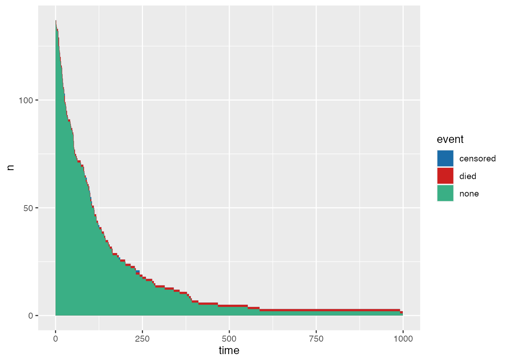
veteran data, depicting what events occurred at each time t.Survival curves
Now we’re ready to explore the Kaplan-Meier estimates of the survival probability over time. First, let’s look at the life table data again:
glimpse(veterans_km_fit_tidy)#> Rows: 102
#> Columns: 8
#> $ time <dbl> 0, 1, 2, 3, 4, 7, 8, 10, 11, 12, 13, 15, 16, 18, 19, 20, 21,…
#> $ n.risk <dbl> 137, 137, 135, 134, 133, 132, 129, 125, 123, 122, 120, 118, …
#> $ n.event <dbl> 0, 2, 1, 1, 1, 3, 4, 2, 1, 2, 2, 2, 1, 3, 2, 2, 2, 1, 2, 3, …
#> $ n.censor <dbl> 0, 0, 0, 0, 0, 0, 0, 0, 0, 0, 0, 0, 0, 0, 0, 0, 0, 0, 0, 1, …
#> $ estimate <dbl> 1.0000000, 0.9854015, 0.9781022, 0.9708029, 0.9635036, 0.941…
#> $ std.error <dbl> 0.00000000, 0.01039891, 0.01278345, 0.01481644, 0.01662791, …
#> $ conf.high <dbl> 1.0000000, 1.0000000, 1.0000000, 0.9994081, 0.9954216, 0.981…
#> $ conf.low <dbl> 1.0000000, 0.9655208, 0.9539002, 0.9430165, 0.9326091, 0.903…The last four variables, which we skipped over earlier, are the Kaplan-Meier estimates of the survival probability over time:
estimate: Estimate of the survival function, the probability of surviving up to time tstd.error: The standard error of the regression termconf.high: Upper bound on the pointwise confidence interval for the estimateconf.low: Lower bound on the pointwise confidence interval for the estimate
These estimates and their intervals can be plotted as a survival curve:
ggplot(
veterans_km_fit_tidy,
aes(x = time, y = estimate, ymin = conf.low, ymax = conf.high)
) +
geom_lineribbon(step = "hv")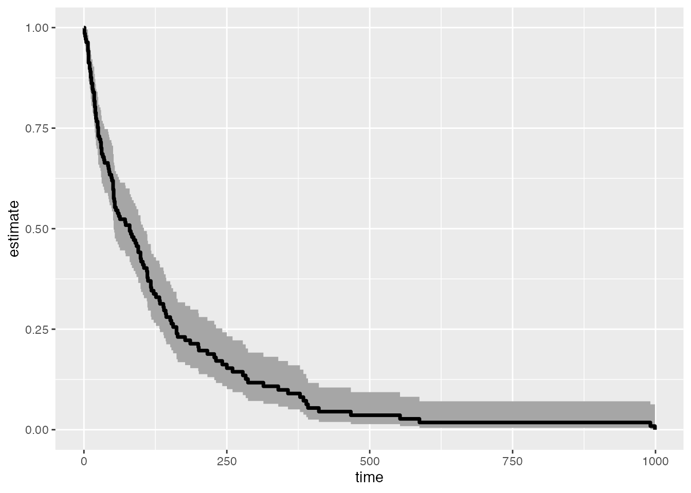
To better visualize uncertainty about our estimates, we can plot multiple intervals of different widths. To do this we first create a small helper function, dist_tidy(), to get multiple intervals from a survival model with additional .width and level columns for compatibility with ggdist::geom_lineribbon():
dist_tidy <- function(x, conf.type = "log-log", conf.int = 0.95, ...) {
purrr::map_df(
purrr::set_names(conf.int),
function(.x) broom::tidy(update(x, conf.type = conf.type, conf.int = .x)),
.id = ".width"
) |>
dplyr::mutate(
# ggdist automatically pulls from the .width column of summarized data to
# plot multiple intervals. The width column should be numeric for this to
# work correctly.
.width = as.numeric(.width),
# ggdist turns .width into level internally with its stat_ geoms, but for
# geom_ geoms we need to do this in the summary data. This is mainly for
# ease of use with the fill_ramp aesthetic.
level = factor(.width, levels = sort(conf.int, decreasing = TRUE))
) |>
dplyr::relocate(.width, level, .after = dplyr::everything()) |>
# The last time always has NAs for the CIs and it's important to remove this;
# otherwise the fills in ggdist::geom_lineribbon() will plot incorrectly.
na.omit()
}Then we can plot the survival curve with multiple intervals (here 66% and 95%) using the data tidied with dist_tidy():
veterans_km_fit_dist <- dist_tidy(veterans_km_fit, conf.int = c(0.66, 0.95))
p_veterans_km <- ggplot(
veterans_km_fit_dist,
aes(x = time, y = estimate, ymin = conf.low, ymax = conf.high)
) +
geom_lineribbon(step = "hv") +
scale_fill_brewer()
p_veterans_km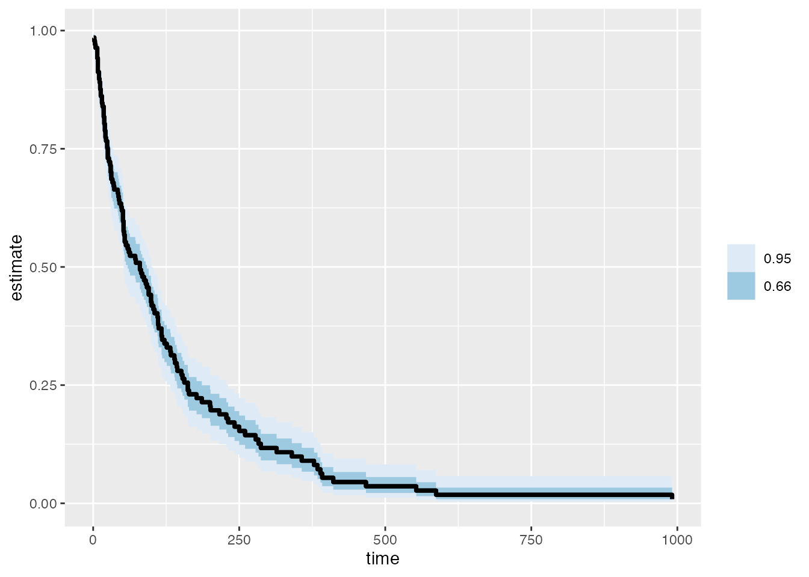
It may also be desirable to add additional info to the survival curve plot, like when censoring occurred. A non-invasive way to do this is to add a rug of censored times to the x-axis. A more common approach is to add points directly on the survival curve where censored events occurred. These points are often plotted as black “+” signs, which can be hard to see; here I plot them as red points instead.
# To add censoring information to the plot we need a data frame containing only
# the censored observations.
veterans_km_fit_tidy_censored <-
filter(veterans_km_fit_tidy, n.censor != 0)
# With a rug
p_veterans_km +
geom_rug(aes(y = NULL), data = veterans_km_fit_tidy_censored)
# With points
p_veterans_km +
geom_point(
data = veterans_km_fit_tidy_censored,
colour = "red"
)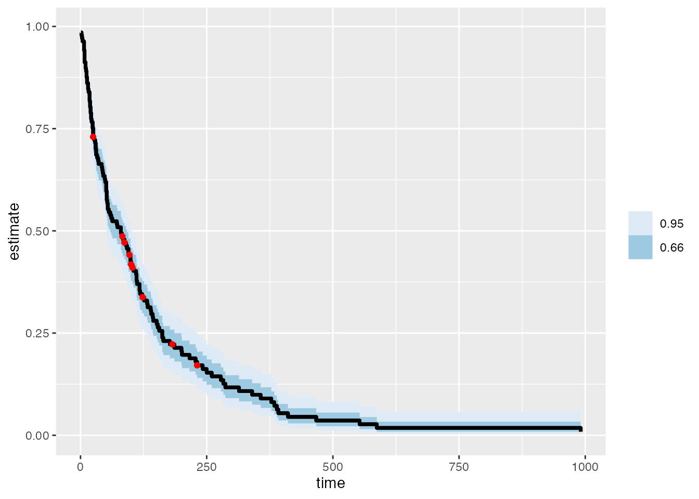
veteran data.Along with the life table data, which we use to plot the survival curve, the survfit object stores the following summary statistics:
records: Number of observationsn.max: Maximum number of subjects at riskn.start: Initial number of subjects at riskevents: Number of eventsrmean: Restricted mean survivalrmean.std.error: Restricted mean standard errormedian: Median survivalconf.low: Lower end of confidence interval on medianconf.high: Upper end of confidence interval on mediannobs: Number of observations used
They can be retrieved with broom::glance():
The method used to resolve the restricted mean survival estimate when the last observation is not a death can be set with the optional rmean argument in broom::glance(). For details, see ?survival::print.survfit and ?broom::glance.survfit.
veterans_km_fit_summary <- glance(veterans_km_fit)
glimpse(veterans_km_fit_summary)#> Rows: 1
#> Columns: 10
#> $ records <dbl> 137
#> $ n.max <dbl> 137
#> $ n.start <dbl> 137
#> $ events <dbl> 128
#> $ rmean <dbl> 132.7768
#> $ rmean.std.error <dbl> 15.30789
#> $ median <dbl> 80
#> $ conf.low <dbl> 52
#> $ conf.high <dbl> 105
#> $ nobs <int> 137These summary statistics can be included in the survival curve plot as well. For example, the median survival time:
p_veterans_km +
geom_segment(
aes(x = -Inf, xend = conf.high, y = 0.5, yend = 0.5),
data = veterans_km_fit_summary,
linetype = 2,
inherit.aes = FALSE
) +
geom_rect(
aes(xmin = conf.low, xmax = conf.high, ymin = 0, ymax = 0.5),
data = veterans_km_fit_summary,
alpha = 0.5,
inherit.aes = FALSE
) +
geom_segment(
aes(x = median, xend = median, y = 0, yend = 0.5),
data = veterans_km_fit_summary,
inherit.aes = FALSE
)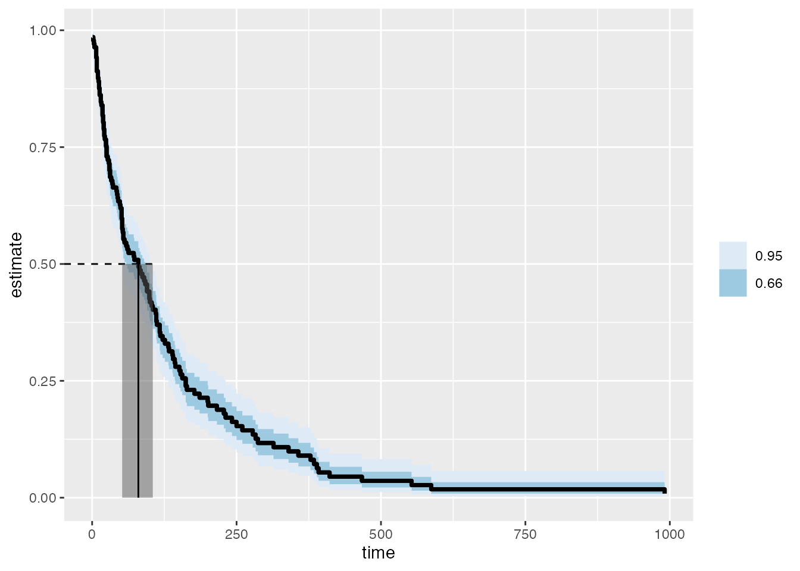
Cumulative risk (incidence) curves
The cumulative risk (aka cumulative incidence) at a time point is simply one minus the survival probability:
p_veterans_risk <- ggplot(
veterans_km_fit_dist,
aes(x = time, y = 1 - estimate, ymin = 1 - conf.low, ymax = 1 - conf.high)
) +
geom_lineribbon(step = "hv") +
scale_fill_brewer()
p_veterans_risk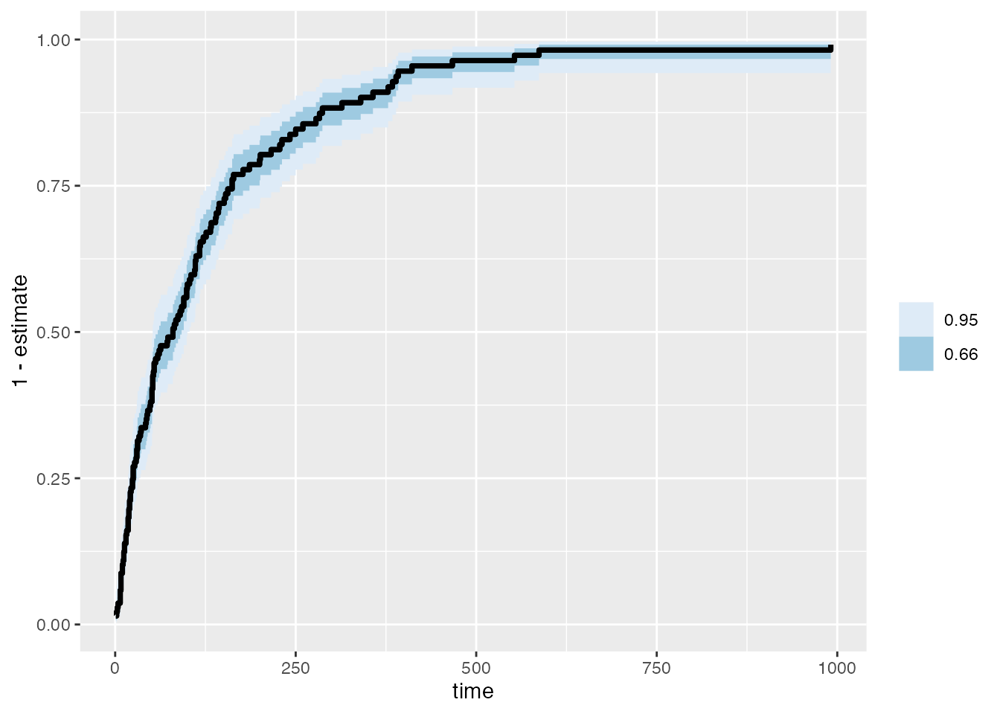
Cumulative hazard curves
The cumulative hazard function can be estimated in two ways:
- the negative log survivor function method
- the Nelson-Aalen method
In general both methods give similar estimates, particularly at early event times when the risk set is large. However, they tend to diverge as the size of the risk set decreases.
The negative log survivor function method involves transforming the Kaplan-Meier estimates of survival probability over time by taking their negative log. The resulting estimates of the cumulative hazard function are called negative log survivor function estimates.
p_veterans_cumhaz <- ggplot(
veterans_km_fit_dist,
aes(x = time, y = -log(estimate), ymin = -log(conf.low), ymax = -log(conf.high))
) +
geom_lineribbon(step = "vh") +
scale_fill_brewer()
p_veterans_cumhaz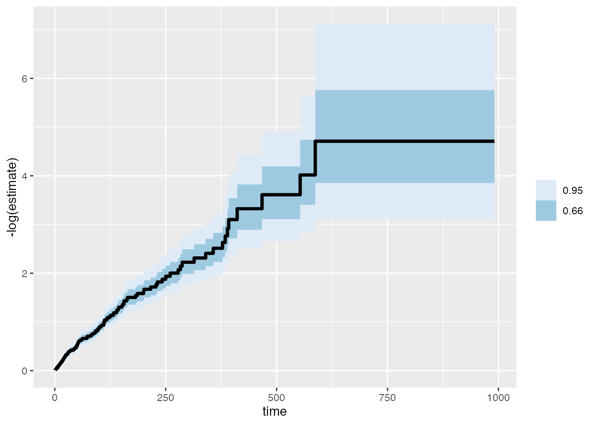
Estimates of the cumulative hazard function and their standard error using the Nelson-Aalen method are included in the survfit object as object$cumhaz and object$std.chaz, respectively. No confidence intervals are returned, however.
Kernel smoothed hazard curves
The muhaz package provides a method for gettinng kernel smoothed estimates of the hazard function. The function API isn’t great, so we wrap it in a small helper function to make things cleaner. No intervals are provided for these estimates.
library(muhaz)
haz_tidy <- function(x, ...) {
x <- broom::tidy(survival::survfit0(x))
haz <- muhaz::muhaz(
times = x$time,
delta = x$n.censor,
min.time = min(x$time),
max.time = max(x$time),
bw.method = "global",
b.cor = "none",
...
)
broom::tidy(haz)
}
ggplot(haz_tidy(veterans_km_fit), aes(x = time, y = estimate)) +
geom_line()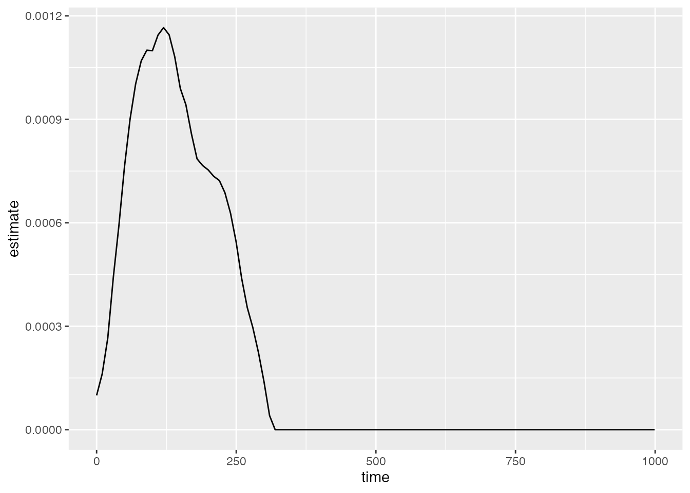
Statistical modelling
Predictive methods
Multiple groups
TODO: Decide whether to have a single arm trial section AND a multi-group RCT section (mainly because there are some code differences between the two)
Multiple survival curves on one plot:
veterans_fit <- survfit(Surv(time, status) ~ trt, data = veteran)
veterans_fit_tidy <- dist_tidy(veterans_fit, conf.int = c(0.66, 0.95))
p <- ggplot(
veterans_fit_tidy,
aes(x = time, y = estimate, ymin = conf.low, ymax = conf.high, fill = strata)
) +
geom_lineribbon(aes(fill_ramp = level), step = "hv")
p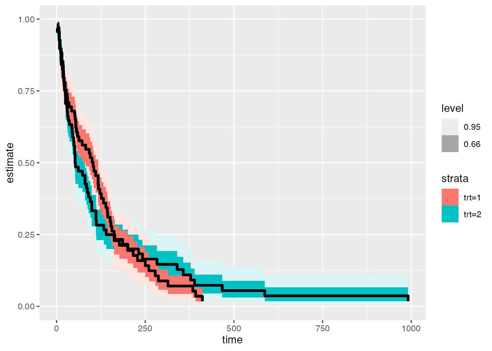
This specific example might be better server with a faceted plot:
p + facet_wrap(vars(strata), ncol = 1)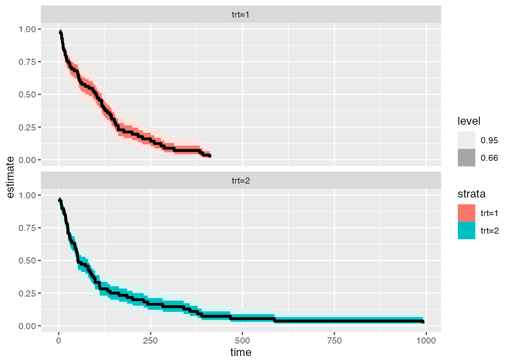
glance() only supports models that can be summarized in a single row. We can refit the survival model to subsets as a workaround to get glance() to work for multi-strata survival models:
veterans_fit_glance <- map_df(
c("trt=1" = 1, "trt=2" = 2),
function(.x) glance(update(veterans_fit, subset = (trt == .x))),
.id = "strata"
)
veterans_fit_glanceAlternatively, use summary():
summary(veterans_fit)[["table"]]#> records n.max n.start events rmean se(rmean) median 0.95LCL 0.95UCL
#> trt=1 69 69 69 64 123.9282 14.84352 103.0 59 132
#> trt=2 68 68 68 64 142.0613 26.81071 52.5 44 95